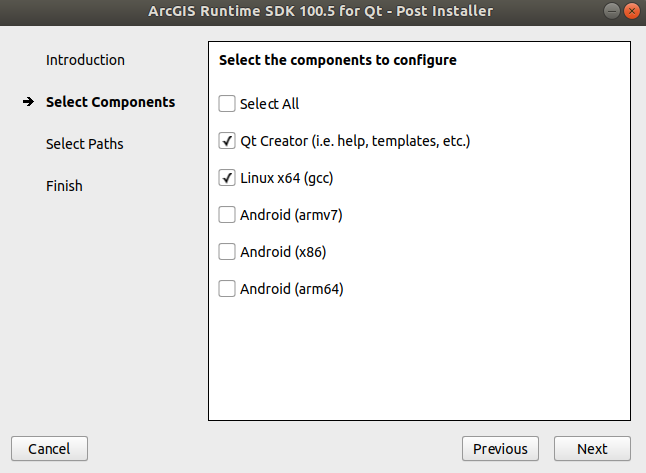

Installation¶
Mission Control can be built from source as well as installed as a dynamically and statically linked binary. The For Development Subsection describes how the application can be installed for development purposes.
We also provide a pre-built application image which does not require any installation. These can be downloaded here. <TODO INSERT LINK>
For Development¶
Step:1 : Download and Install Qt¶
Please download any version of Qt > 5.12 from here: Qt Download Page. Also install the latest version of Qt Creator which will be bundled with the Qt installer. If you are using the online installer Qt will download a .run file on your system. To run open a terminal in the download file location and run:
chmod a+x qt_installer.run
./qt_installer.run
Step:2 : Download and Setup ArcGIS¶
To compile and effectively use the Mission Control we also need to setup ArcGIS. Download ArcGIS 100.5. You might need a developer account to download the setup. Please create one here.
Once logged in, download ArcGIS 100.5 for your specific OS. Extract the tar.gz using the following command:
tar -xf ArcGIS_Runtime_SDK_Qt_Linux64_100_5_0.tar.gz
from the extracted directory run:
./Setup
Follow the instructions to install ArcGIS. For the post installer select the following:
Enter the location of Qt Creator and qmake binaries from your system. Note: Qt Creator is generally located in /home/user/Qt/Tools/QtCreator/bin/qtcreator.
Step:3 : Download Mission Control¶
You can clone the Mission Control Application using:
git clone https://ascl2.ece.vt.edu/avl/avl_gui_new
Setup:4 : Setup Mission Control using Qt¶
Open the QtCreator, From File, select Open a project, navigate to the cloned mission control folder and select the avl_gui_new.pro file. Configure the file with desktop setting in Qt. Build and Run.